Background (Advanced Math Concepts)¶
A congruence 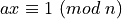 is equivalent to the Diophantine equation 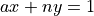. A solution for x exists only if gcd(a,n)=1. Otherwise, a and n will have a common divisor different from 1, the left hand side will be divisible by this common divisor, but the right hand side will not be, leading to a contradiction.
In fact, if gcd(a,n)=1, is guaranteed to have a unique solution modulo n. If we define a binary operation - ‘multiplication’ - with arguments a and x as multiplication modulo n, then 1 can be defined as the identity (neutral element) for the operation, and a and x are inverses of each other.
Euler’s Theorem¶
Consider a subset G of 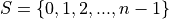 defined as the set of numbers that are relatively prime to n. Multiplication is commutative and associative, there is a multiplicative identity, and every member of the set G has a multiplicative inverse within set G. Thus, G forms a multiplicative group. The order of the group is 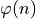. When any element of a multiplicative group is raised to the order of the group, the result is the mulitplicative identity. Hence, for all elements of the group G, 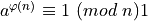. This is Euler’s theorem.
As an example, let us consider numbers modulo 15. 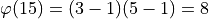.
a |
is gcd(a,15)=1? |
inverse(a) |
order of a |
|---|---|---|---|
0 |
N |
||
1 |
Y |
1 |
1 |
2 |
Y |
8 |
4 |
3 |
N |
||
4 |
Y |
4 |
2 |
5 |
N |
||
6 |
N |
||
7 |
Y |
13 |
4 |
8 |
Y |
2 |
4 |
9 |
N |
||
10 |
N |
||
11 |
Y |
11 |
2 |
12 |
N |
||
13 |
Y |
7 |
4 |
14 |
Y |
14 |
2 |
The order of an element  (as opposed to order of the group) is the smallest positive integer
(as opposed to order of the group) is the smallest positive integer  such that 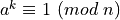, that is the smallest power that gives the identity. As can be seen from the table, the order of the elements of G divide the order of the group G (a consequence of Lagrange theorem in group theory) resulting in the Euler’s theorem.
such that 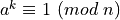, that is the smallest power that gives the identity. As can be seen from the table, the order of the elements of G divide the order of the group G (a consequence of Lagrange theorem in group theory) resulting in the Euler’s theorem.
Wilson’s Theorem¶
Now consider the case of modulo p, where p is a prime greater than 2. Every residue other than 0 is relatively prime with p and is thus invertible. Hence, 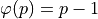 and the group G is of order 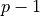.
For any modulo  ,
,  and
and  are self-inverses. For modulo prime
are self-inverses. For modulo prime  , the 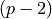 residues other than and pair up to form pairs of mutual-inverses. Thus, multiplying these numbers results in 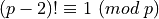.
, the 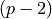 residues other than and pair up to form pairs of mutual-inverses. Thus, multiplying these numbers results in 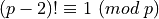.
We have not proved that the 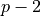 residues other than and cannot be self inverses. Suppose, one of those residues -  - is a self-inverse.
- is a self-inverse.
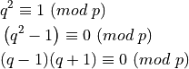
However, both 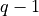 and 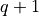 are relatively prime to . Thus, neither , nor is divisible by prime . Hence, 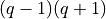 is not divisible by and we have a contradiction. Hence, cannot be a self-inverse.
As an example, consider modulo 11. 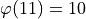.
Self-inverses:
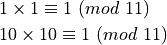
Inverse-pairs:
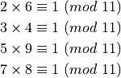
Multiplying these four congruences, 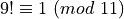 : Wilson’s theorem